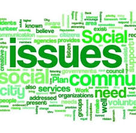

Equity : the quality of being fair and impartial.
Equality : the state if being equal especially in status, rights, and opportunities.
To elaborate on the differences between the two, equity means fairness, but not necessarily meaning it is equal. For example, there are three guys. An eight year old, fifteen year old and a 45 year old. They all want to look over the fence to watch the dogs play in the field. There are three crates. To have equality you would need to give each of the gentlemen one crate. Now, to have equity you would need to give the youngest child two crates because he is the shortest of them, give the second youngest child one crate so that he will be able to see over, then give the last gentleman no crates, because he can already see over the fence without them.
Same-sex marriage can be defined as the kind of marriage where two people of the same biological sex enter into a matrimonial union. There are many reasons why a couple may opt to be joined in a same-sex marriage, the social preference, social influence, and gender dysphoria, among many others. The notion of same-sex marriage has existed since ancient times. Same-sex marriage was not openly discussed in most social circles because of government directives and it was simply not socially acceptable. In the past, most traditional socio-cultural practices and beliefs shunned the idea of same-sex marriages, almost always due to religious beliefs. The same views were adopted by governments around the world, thus making same-sex marriages an offense. However, things have drastically changed in today’s world, where most people are beginning to not only realize but also appreciate the need to understand and even legalize the practice of same-sex marriages. The 14th amendment of the American constitution advocates for the equal protection of all persons regardless of their background (Lupu, 2015). All persons should respect same-sex marriages and that they should be treated equally without any form of discrimination.